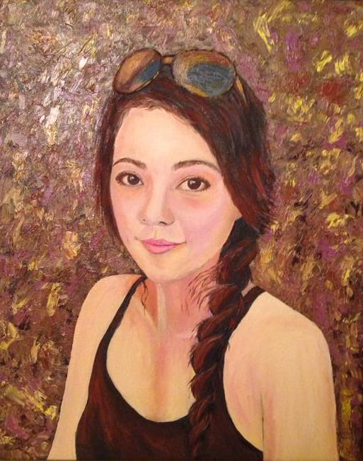

| The Artist Francesca Kee |
| Home | Enter Gallery |
|
Francesca Kee is an oil painter who came from Taiwan. She has lived and traveled to several states in US and abroad. She paints things she likes and places she has been. Her work can be found in the private collections in Taiwan and United States’ art enthusiasts. Recently she had numerous group and solo exhibitions in the Bay Area and Seattle. She currently resides in Seattle. You can also see her work at www.francescakee.com Art Exhibitions:
Art Contests:
|



|
| Copyright © 2013-2015 by Francesca Kee Fine Art. All rights reserved. |